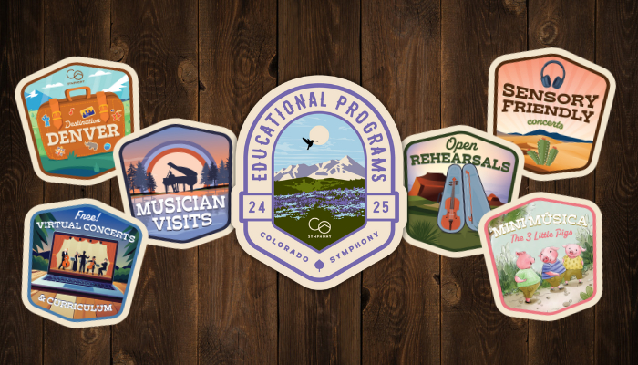

About
The Colorado Symphony Association is the region's only full-time professional orchestra committed to artistic excellence and ensuring the future of live, symphonic music. Performing over 150 concerts annually at Boettcher Concert Hall in downtown Denver and across Colorado, your Colorado Symphony is home to eighty full-time musicians, representing more than a dozen nations, and regularly welcomes the most celebrated artists from all genres of music. Recognized as an incubator of innovation, creativity, and excellence, your Colorado Symphony continually expands its impact through education, outreach, and programming. We partner with the state's leading musical artists, cultural organizations, corporations, foundations, sports teams, and individuals to expose diverse audiences to the power of symphonic orchestral music.
Core Values
EXCELLENCE
We are committed to musical and artistic excellence with a further commitment to ensuring there is a solid future for live symphonic music in Colorado.

SUSTAINABILITY
We are dedicated to maintaining an orchestra of the highest performance standards, modeling best practices and balanced fiscal stewardship.

INNOVATION
We will embrace and maintain our culture of success, calculated risk-taking, fostering imagination, and invention in an ever-changing world of the performing arts.
COMMUNITY
We are committed to growing a culture for modern, relevant, creative music to uplift, unite, and celebrate all people.

DIVERSITY & INCLUSION
We are committed to providing symphonic and educational experiences that celebrate our humanity, reflect and value the diversity of our community, and seek out meaningful collaborations.
Diversity, Equity, & Inclusion Statement
Music brings people together to inspire and unite the human spirit. The Colorado Symphony Association (CSA) believes that symphonic music must be available to everyone and that communities thrive when music is accessible to all.
The CSA is committed to being an inclusive organization where diverse perspectives are sought out and valued; and to create experiences for our audiences where all people and communities feel welcome, represented, and connected. The CSA will continuously strive to achieve greater inclusivity and equity by leading in a way that represents our art form, one of collectivism and harmony.
The CSA believes in the dignity of all and respects a diversity of cultures, identities, orientations, heritages, beliefs, and experiences. As a cultural institution and only full-time professional symphony orchestra in the state, we recognize the power of symphonic music and believe we can bring our community together to create greater social understanding through live symphonic music.
What We Offer
Each season the Colorado Symphony presents a wealth of world-class artistry performed by your critically-acclaimed orchestra, the region's only full-time professional orchestra. We present performances and/or events almost every weekend, September through May. Concert categories include Classics, Symphony Pops, Spotlight, Family, Holiday, Movie at the Symphony, Alternative, and even our Summer performances, which feature numerous concerts at the historic Red Rocks Amphitheater.

In addition to our standard concert season, we're happy to provide plenty of other fun opportunities for events and activities. Support the symphony by participating in great annual events like the Symphony Gala and social networking opportunities through Colorado Symphony Young Professionals, the Colorado Symphony Guild, Women of Note, and more. Throughout the season you'll also find pre and post-concert events, like Preludes & Talkbacks, that will make your concert experience extra special. Plus, make a donation to the Colorado Symphony and receive access to special donor events like open rehearsals, happy hours, master classes, and more.

We offer a wide array of experiences that can involve you and your partner, or you can bring the kids for pre-concert HalfNotes activities and special events geared specifically toward their growing knowledge and love of music. With our commitment to serving the community with culturally enriching musical experiences, we hope that you will visit for any one of our special events or performances. Bring your friends—we have events and activities for everyone's tastes!
Contact Us
Boettcher Concert Hall at the Denver Performing Arts Complex
Box Office
- Phone: (303) 623-7876
- (303) MAESTRO
- Email: tickets@coloradosymphony.org
Box Office Hours
- Monday-Saturday: 10:00 a.m.-5:00 p.m.
- Sunday: Closed
Address
1000 14th Street, No. 15,
Denver, CO 80202
2024/25 Holiday Closures
- Thanksgiving: Thursday, November 28, 2024
- Christmas Eve: Tuesday, December 24, 2024
- Christmas Day: Wednesday, December 25, 2024
- New Year's Day: Wednesday, January 1, 2025
Colorado Symphony Administration
Media Contact
Nick Dobreff, Communications and Creative Director
(303) 308-2477
Donors & Sponsors
Email giving@coloradosymphony.org with questions regarding donating or becoming a sponsor.
Admin Address
1245 Champa Street